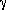
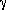

3D Cartesian Coordinate Rotation (Direction) VI
Owning Palette: Geometry VIs
Requires: Full Development System
Rotates a three-dimensional Cartesian coordinate in the counterclockwise direction using the direction method. Wire data to the X input to determine the polymorphic instance to use or manually select the instance.
Use the pull-down menu to select an instance of this VI.
 Add to the block diagram Add to the block diagram |
 Find on the palette Find on the palette |


 ,
,  , and  are the direction angles of vector OP, as shown in the following illustration:
, and  are the direction angles of vector OP, as shown in the following illustration: